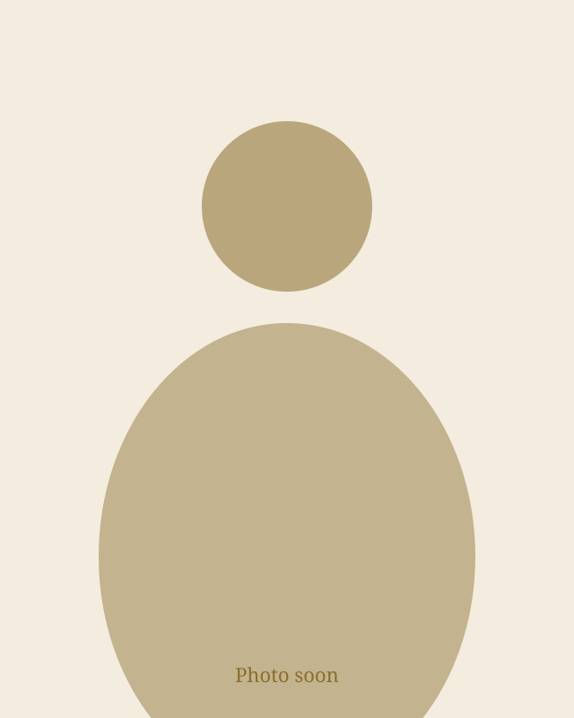
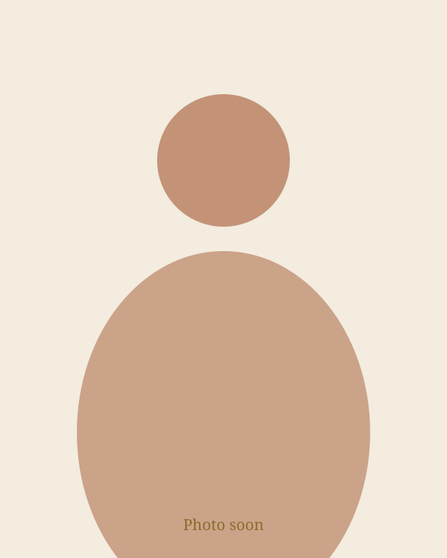
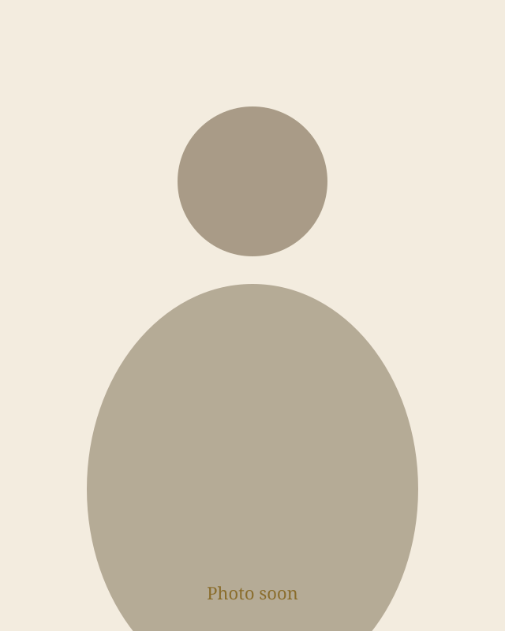
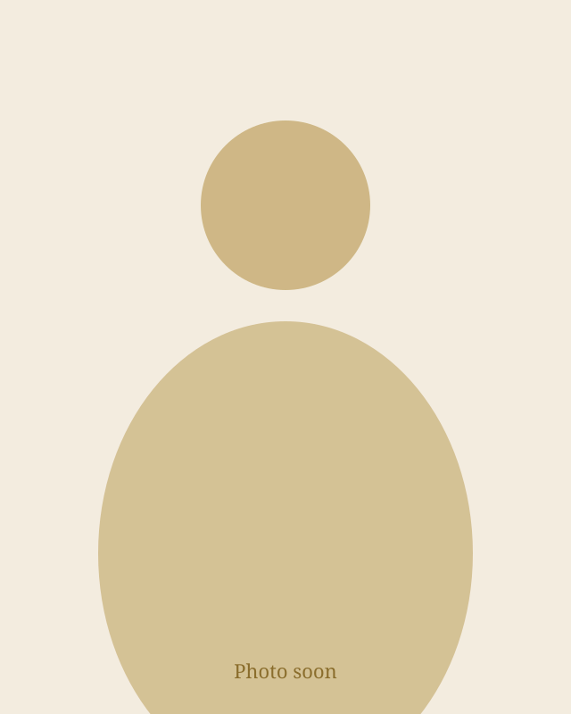
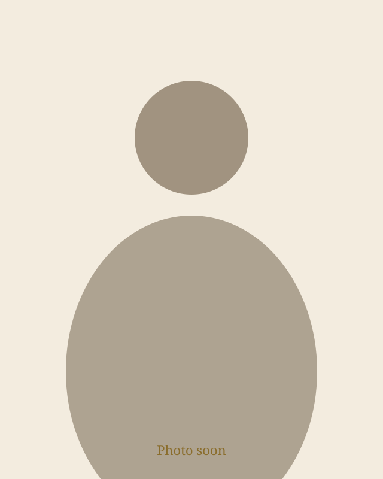

The Jůzl family of Kochánov: mixing since 2004 the food they cook themselves
The workshop is at Kochánov 40, twelve kilometres from Havlíčkův Brod. The flour comes from a mill our extended family runs. Jiřina takes the orders.

How it started
We started making food mixes in a small workshop in Kochánov in 2004 and tuned the recipes over the years. Today households across Bohemia and Moravia buy from us, along with canteens, restaurants and bakeries.
People
Who is who
When you call or write, you are talking to one of us.

Jiřina Jůzlová
Owner · production and orders
You speak to the person who makes the mixes — not a call centre. Czech, daily 8:00–19:00.
Jiří Jůzl
Owner · production and logistics
Second workshop phone. Helps with pick-up, delivery and getting packs to you in good order.

Lucie Kůželová
Production, packing, sales and customers
Often answers your enquiry on Facebook too. Makes sure goods leave packed and on time.

Filip Kůžel
Logistics and customers
Helps with delivery and collection — so the path from workshop to you stays simple.

Jířa Kennedy-Jůzlová
Ingredients, quality and certifications
Watches ingredients and paperwork from farm to kitchen — so taste and quality hold in every pack.

Adam Kennedy
Marketing and website
Makes it easy to find us, see the products and know how to order.
Where the flour comes from
The wheat flour in our dumpling mixes comes from a mill in Havlíčkův Brod, 12 km from the workshop, carrying the Czech KLASA quality mark. Our extended family owns and runs the mill, so we know what goes into the bag.
What we don't do
- No web shop. You order by phone, e-mail or the form.
- No samples or tastings.
- No invented stars — ratings come from our live Google and Firmy.cz profiles.
- We reply in Czech; for German and English we sometimes use a translator.
Ratings
What customers say
Ratings come from our live Google and Firmy.cz profiles. We do not invent stars.
Frequently asked questions
Where exactly are you?
Kochánov 40, 582 53, Vysočina Region, Czechia, 12 km from Havlíčkův Brod. Not 582 91 — that is a different Kochánov.
Are you a registered company?
Yes. Jůzlová s.r.o., company ID 45900124. On maps we appear as Juzlova - Potravinářské směsi.